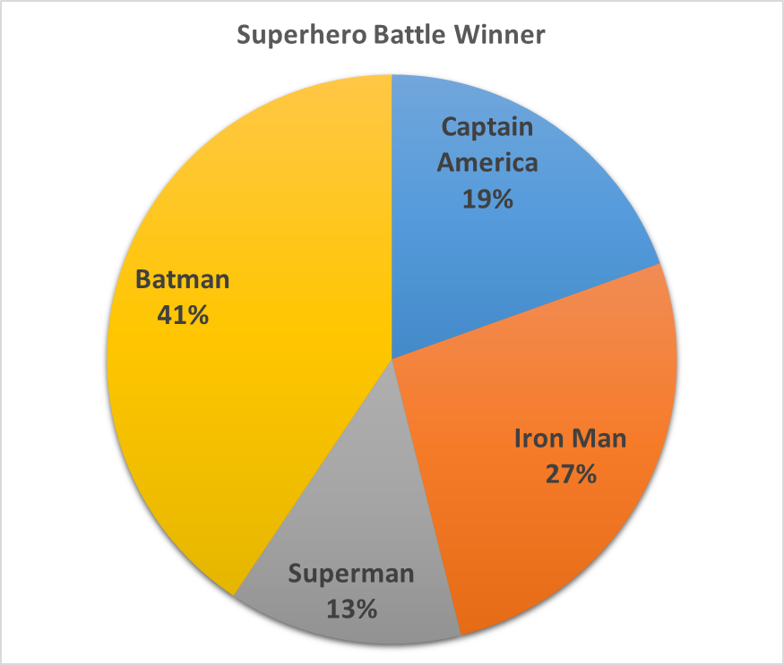
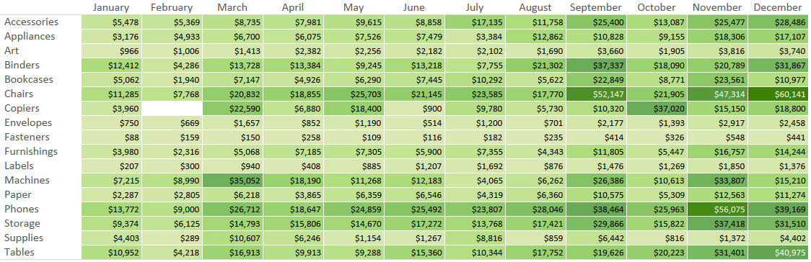

page title
paper title
Create and Maintain a Manageable Corporate Data Warehouse
Introduction
This paper is to share concepts I have learned about Big Data Analysis and Warehousing, and the accompanying Technology, Methodology and the available Tools and Techniques. With the massive numbers of available tools, frameworks, libraries, databases, companies and corporations, developers, techniques, data sources and other resources available today, all of which is increasing at rocket speed, managing Big Data is a colossal issue.
Big Data
Big Data elements are "extremely large" datasets, including JSON or XML document-based collections or embedded structures of up to 100 nested container levels, spreadsheets, wide columnar tables or relational database tables of millions of rows, or any combination of these types of data sources.
There are many ways to analyze Big Data using the above-mentioned resources that to filter, summarize, and detect outliers, trends, patterns and cycles. These necessary procedures enable business decisions to be made correctly, due to the varied types of sources that are collected needing to be formatted, summarized and/or normalized through ETL or ELT processes.

The National Institute of Standards and Technology issued a report defining Big Data as “extensive datasets—primarily in the characteristics of volume, velocity, and/or variability—that require a scalable architecture for efficient storage, manipulation, and analysis.” [source]
Big Data has also been defined as an amount of data that exceeds a petabyte, which is a million gigabytes.
When is Big Data contained in a Data Mart or Data Warehouse?
Data Marts contain data for one specific business purpose. These repositories are usually containers of summarized data ready to be analyzed for said business purpose.
Data Warehouses may contain various Data Marts, and aggregate this data
Data Mart |
Data Warehouse |
|
|---|---|---|
| Focus: | A single subject or functional organization area | Enterprise-wide repository of disparate data sources |
| Sources: | Relatively few sources linked to one line of business | Many external and internal sources from different areas of an organization |
| Size: | Less than 100 GB | 100 GB minimum but often in the range of terabytes for large organizations * |
| Normalization: | No preference between a normalized and denormalized structure | Modern warehouses are mostly denormalized for quicker data querying and read performance |
| Decision Types: | Tactical decisions pertaining to particular business lines and ways of doing things | Strategic decisions that affect the entire enterprise |
| Cost: | Typically from $10,000 upwards | Varies but often greater than $100,000; for cloud solutions costs can be dramatically lower as organizations pay per use |
| Setup Time: | 3-6 months | At least a year for on-premise warehouses; cloud data warehouses are much quicker to set up |
| Data Held: | Typically summarized data | Raw data, metadata, and summary data |
* Data is often measured in petabytes for mega-corporations, and is may be referred to as Data Lakes
Table data obtained from Panoply website
Data Models
Which model to use when: Inmon or Kimball?
The Inmon Model (snowflake model) is best suited for the largest collections of data in Data Warehouses. They are not the fastest type of system to set up, they take many months of planning, setting up infrastructure, data collection, selecting the best tools to use to produce the results for the specific needs of the end users. This model takes advantage of horizontal scaling to handle the heavy burden of all the data spread across many nodes or computers.

The Kimball Model (star schema) works best for Data Marts with smaller data collections. They can be set up fairly quickly, and are must less costly, which helps smaller enterprises keep a lower budget. This model works well with vertical scaling.
Data Transformation
Data Quality
When designing a system for a Data Warehouse that needs to be spread out, tools like Cassandra, Hadoop and MapReduce will help significantly. They are created to support multiiple programming languages for any custom query needs, and for horizontal scaling across many nodes. "What are the methods and tools and techniques that i'm going to be utilizing that's going to be your transformation stage. How does that fit into my big data elements of my of my operational systems from there that's going to be the that's going to be the PRIMARY PORTION of your paper and I and again"
Data Analysis
Once data sources are collected, they must be processed to draw out the insights hidden in the ocean of bits and bytes. Descriptive analytics is viewing past events' data. Diagnostic analytics finds out why the events may have happened. Predictive analytics are for viewing future events. Prescriptive analytics facilite future decisions based on these predictions.
Data Visualization
Data vizualization will facilitate finding outliers, trends, cycles, anomalies and other points of interest for making the big business decisions. It is much more difficult to see patterns in tables of numbers that don't seem to make any sense, but having colors, lines, bars, circles, bubble and other visual aids make the patterns, or lack of patterns, pop out. Here a few samples of data visual aids:
Bar Chart

Pie Chart

Pivot Table

Box Plot Chart

Line Graph

Area Chart

Online Analytical Processing (OLAP):
RDBMS, NoSQL, XML docs
“...enables end-users to perform ad hoc analysis of data
in multiple dimensions, thereby providing the insight and understanding they need for
better decision making [by providing the] ability to create very fast aggregations and
calculations of underlying data sets.” (source) · Document Management: “a document-
oriented database contains documents, which are records that describe the data in the
document, as well as the actual data; one or more document [can be used] to represent a
real-world object.” (source) ·
Combining Streaming Telemetry with Other Data Sources
From the network operations perspective, streaming telemetry can improve efficiency in many use cases, including:
• Detecting problems by setting up network monitors and alerts based on pre-configured thresholds or network performance baselines
• Troubleshooting connectivity and performance issues
• Planning for network capacity according to usage and budgets
• And much more… especially when we are able to use AI or machine-learning techniques to make automated decisions based on telemetry data.
However, streaming telemetry shouldn’t be the only data source that drives these capabilities. As an example:
Let’s say that you, as a network operator, want to be notified when utilization is high for critical backbone links. The next step would be to determine the characteristics of the traffic that’s driving up utilization. Which applications, clients, and servers are prominent on the highly-utilized links and can thus be used to make various optimization decisions (e.g., changing traffic patterns)?
An appropriate approach could be:
1. Use streaming telemetry metrics as a set of indicators of thresholds, and then
2. Use NetFlow to figure out what type of traffic is causing it.
From
Technical debt is a term that conceptualizes the tradeoff between the short-term benefits of rapid delivery and the long-term value of developing a software system that is easy to evolve, modify, repair, and sustain. Like financial debt, technical debt can be a burden or an investment. Technical debt can be a burden when it is taken on unintentionally without a solid plan to manage it. Technical debt can also be part of an intentional investment strategy that speeds up development … as long as you have a plan to pay it back before the interest swamps your principal.
From
When it comes to software development, technical debt is the idea that certain necessary work gets delayed during the development of a software project in order to hit a deliverable or deadline. "Technical debt is the coding you must do tomorrow because you took a shortcut in order to deliver the software today." [Quote source]
Document Management
RDBMS, NoSQL, XML docs
A critical product insight is understanding user engagement (who is using the product, how often, what flows, etc.). Typically, a data pipeline is built to aggregate the user clickstream details, scripts/programs in spark, hive, impala, etc. to cleanse, process and extract the engagement metrics. The pipeline can be running daily, hourly, or in real-time.
Now, multiply the number of such pipelines by 1000s given the different types of business dashboards, ML models, data products that a typical enterprise runs today. How do you manage and optimize the performance, SLA, cost, resource allocation, quality of these pipelines processing data at petabyte scale? This is a non-trivial problem given the plethora of technology building blocks involved in a data pipeline and the deep expertise required to efficiently map pipeline configurations to workload and application requirements.
Enter Data Science for Big Data Telemetry. By analyzing billions of data points aggregated across hardware-, cluster-, job-, and application-level, the goal is to provide data users and engineers an understanding into: 1) What is the current state; 2) Why root-causes and signals; 3) How-to tune the application, cluster, resource allocation to get to an optimal state. Data pipelines today are treated no longer as an IT overhead, but as part of the business differentiator powering the insights, data products, AI/ML explorations within the enterprise. Data Science for Big Data Telemetry is critical in answering questions such as:
• How much budget do I need for running my pipelines based on workload patterns (especially in the cloud)?
• Why is this spark application running slow?
• How do I improve the resource utilization of the big data cluster?
• Is my CPU-memory allocation within the cluster balanced?
• Is a particular big data application rogue?
• Which cloud instance types should I migrate when moving from on-premise to cloud?
• Given the optimization goal (such as cost, performance), finding the best configuration to run the big data pipeline?
From
"The majority of companies today realize the value of a data-driven business strategy and are in need of talented individuals to provide insight into the constant stream of collected information. Research shows that nearly 70 percent of U.S. executives say they will prefer job candidates with data skills by 2021, and the demand for analysts will only grow as we continue to digitize our physical world.
If you’re just starting your research and are wondering how to make the transition to a career in data analytics, you’re not alone. Scanning job postings for data-driven positions is a great starting point, but many analyst roles are highly nuanced, making it difficult to discern which skills are the most necessary to invest in.""
From
But first, let’s define telemetry and what it means for gaming companies. Defined as an automated communications process of recording and receiving data, telemetry is utilized in wide range of industries. In the gaming industry, telemetry is a fundamental part of game analytics. In fact, it’s the core of the game analytics realm in a lot of ways.
What’s more, the definition of telemetry can be simplified even more as the ability to collect multiple variables and data sets over time.
Gaming telemetry or recording and receiving data on user behavior covers a lot of activities – in fact, everything from the naming conventions and structure of the data itself to the operations performed on it could be covered under that umbrella term. However, it’s often also used to describe the raw data itself as it exists in analytics software or reports. And of course, the goal of all of this is improving performance and solving problems in game development, marketing, and research.
From
Managing Telemetry and Technical Debt
Telemetry
Constant and consistent measuring data flow, fluctuations, user engagement and feedback and many other values and monitoring charts and graphs based on this data is a whole other Big Data collection to worry about, but it helps maintain the necessary qualities of the Data Mart or Warehouse.
OpenTelemetry is a very popular, example of an integration tool, an open-source collection of APIs, supports many languages, including, but not limited to:
• Java
• C#
• C++
• JavaScript
• Python
• Rust
• Erlang/Elixir
OpenTelemetry also integrates with many common libraries and frameworks, including:
• MySQL
• Django
• Redis
• Kafka
• Jetty
• RabbitMQ
• Akka
• Spring
• Flask
• gorilla/mux
• net/http
• WSGI
• JDBC
• PostgreSQL
OpenTelemetry also supports analysis of telemetric data from your system by their tools for easy extraction of valuable insigts.
Technical Debt
Technical debt: “the extra [future] development work that arises when code that is easy to implement in the short run is used instead of applying the best overall solution.” (source) Technical debt is the name given to previously unforeseen issues that cause extra financial cost, including salaries for developers.
There are many reasons why technical debt exists:
- Poorly designed infrastructure
- Deviation from business rules/principles
- Poor or no design standards and patterns
- Little or no testing
- Constant or frequent variations of business rules and requirements or incoming data traffic patterns
It is
Integration of data collections with tools, frameworks and libraries to process them can have heavy technical debt. Using the MEAN stack with JavaScript developers on staff, this can be mitigated, as the MEAN stack is based on JavaScript and many tools support JavaScript.
Big Data Integration
RDBMS, NoSQL, XML docs
“...differs from traditional data integration in many dimensions:
Volume, Velocity, Variety and Veracity, which are the big data main characteristics” (source)
"The Cloud Native Computing Foundation (CNCF) maintains an interactive graphic of the nearly 1,000 unique services that make up the cloud-native ecosystem, many of which are free and open source to boot. Additionally, each of the big three cloud providers—Amazon Web Services, Microsoft Azure, and Google Cloud—offers about 200 unique services to customers, across compute, storage, database, analytics, networking, mobile, developer tools, management tools, IoT, security, and enterprise applications.
“The process of application development is simply too fragmented at this point; the days of every enterprise architecture being three-tier, every database being relational, and every business application being written in Java and deployed to an application server are over,” wrote RedMonk analyst Stephen O’Grady in a 2020 blog post. “The single most defining characteristic of today’s infrastructure is that there is no single defining characteristic. It’s diverse to a fault.”
Ongoing Maintenance and Enhancement
Establish maintenance process for ongoing sustainment and enhancement
Conclusion
Explain what methods, tools, and techniques are best suited to deliver a manageable corporate data warehouse [or data mart?] Define how would you go about selecting an analytical tool for the corporation; consider analytical programming but avoid where possible (due to high technical debt) when other tool sets can met needs effectively at low cost (like MicroStrategy, Tableau, Microsoft Power BI, etc.)
-
Sources:
- "Big Data", wikipedia.com, last edited 1 April 2022
- Carey, Scott , "Complexity is killing software developers", InfoWorld, 1 November 2021
- "Enterprise Database Server Data and Structure Definition Language (DASDL) Programming Reference Manual - Embedded Structures", public.support.unisys.com Line 151
- Hiller, Will "13 of the Most Common Types of Data Visualization", Career Foundry, 26 July 2021 line 180
- Lauer, Christian, "9 Technical Debts in your Data Warehouse - Reasons and how to solve them", Towards Data Science, 26 December 2020
- Levy Sarfin, Rachel, "5 Characteristics of Data Quality", precisely.com/blog, 7 May 2021 Line 217
- Loshin, David "Data Requirement Analysis", Science Direct Line 173
- "What Is Big Data?", University of Wisconsin, Data Science Line 156
- "What is data analytics?", Career Foundry
- Kagawa, Aaron & Li, Crystal, "How to Maximize the Value of Streaming Telemetry for Network Monitoring and Analytics", kentik.com/blog, 28 August 2019
- line 251
- line 257
- line 275
- line 282
- line 289
- line 298
- E line 331
- line 338
- Strengholt, Piethein, "The Extinction of Enterprise Data Warehousing"
- linktext
- linktext
- linktext
- linktext
- linktext
- linktext